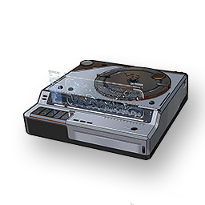

Resonators
Monsters
Weapons
Items
Recorder
Missions

Strange Court of Savantae device.
Court of Savantae device that is used in combination with the sound catcher, can compile the collected Threnodian frequencies, and restore the sound that once existed.